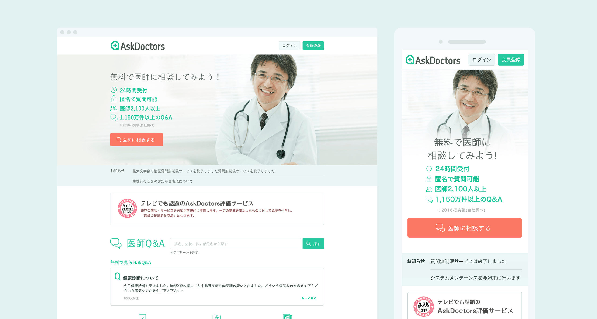
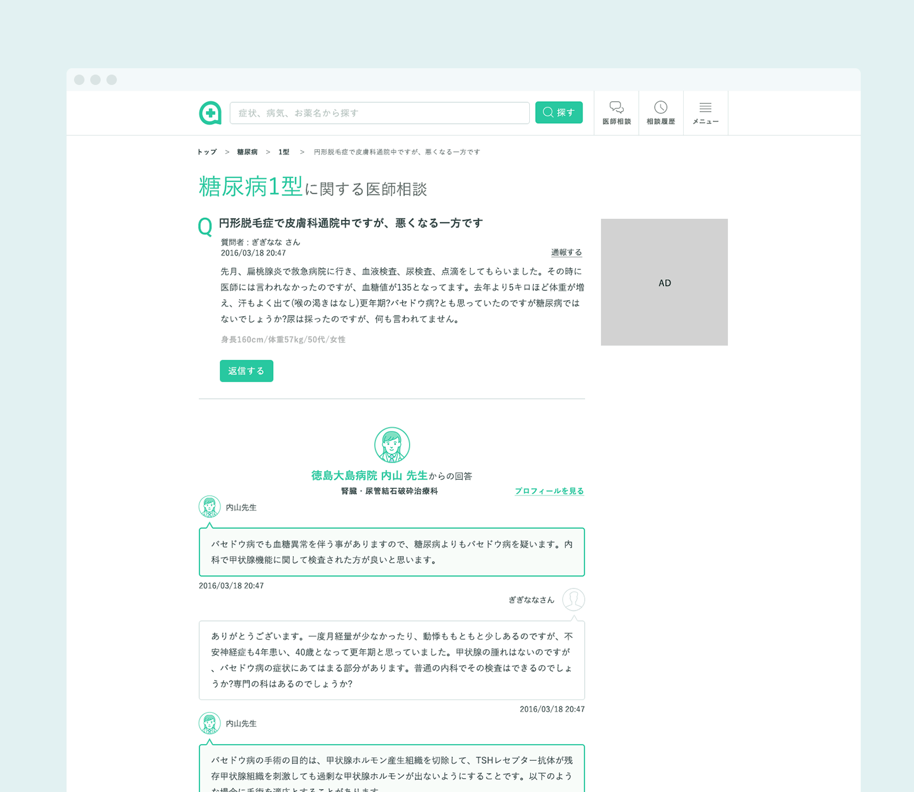
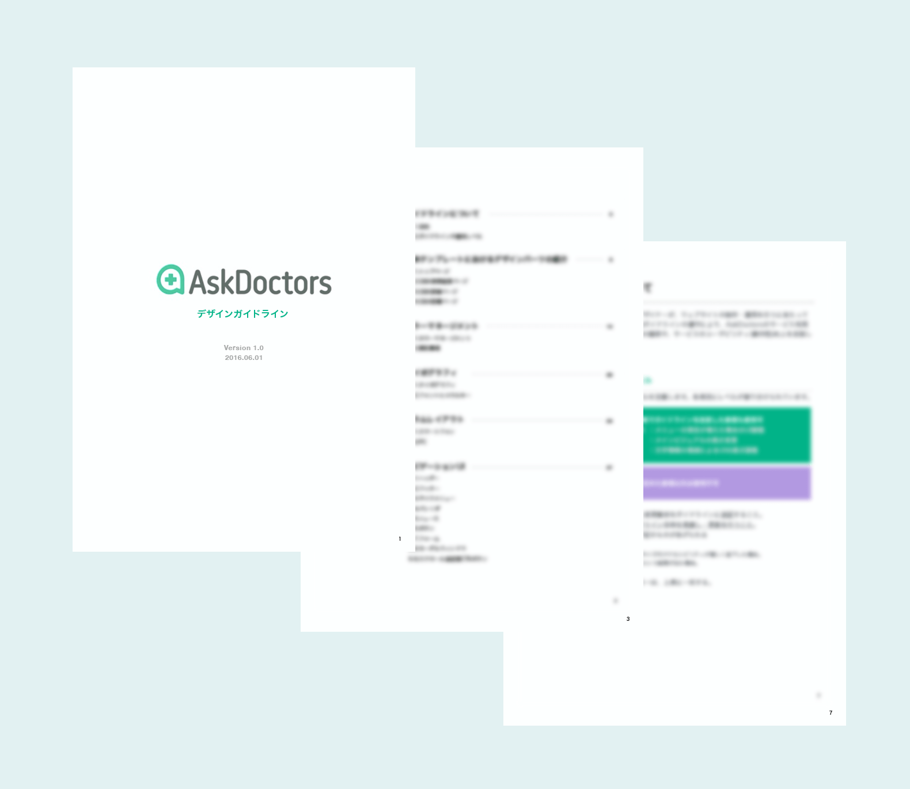

ASKDOCTORS
2016
UI Design & Logo design & Guideline
2016
UI Design & Logo design & Guideline
余地をつくる
医療ポータルサイトM3が運営している病状についてコミュニケーションができるQAサイト『ASKDOCTORS』のUI、ロゴ、デザインガイドラインの作成を担当。
このサイトは公開されてから約10年間でさまざまな増改築を繰り返していくうちにサイト統一性が保てなくなり、ユーザビリティの低下という問題が表面化してきました。これを解決するために、サイトイメージを統一し使いやすいサイトに修復することがミッションとなりました。サイト構築に伴うデザインではなく、それを社内で取り回せるようにするための、デザインコンセプトとデザインガイドライン、ロゴの三点が業務範囲となりました。

トップページ
ユーザーに安心と信頼を寄せて長く使ってもらうためだけでなく、そこに関わるサービス提供者の更新の指針となるものをクリエイティブディレクターが用意。安心してユーザーに使っていただくための一定のクオリティと古臭くならないようにトレンドの良さを適度に取り込む柔軟性を備える考え方を『モダンスタンダート』というキーワードのもと策定しました。そこからインターフェースのカラー、テキスト、ビジュアル、それらをまとめるガイドラインを策定。

お問い合わせ詳細ページ

ガイドライン
デザインガイドラインでは、カラーマネージメントなどブランドに関わる部分を除き、厳密なルールは設定せず柔軟に更新が可能なルールを目指しました。ガイドラインはときとして、ユーザビリティを第一に捉えたときに障害になることがあり、見栄えを保つだけの形骸化したものに陥ります。更新を常に行うことで高いユーザビリティを保つためルールはあえて余裕をもたせた作りとしました。
ロゴ
このサービスは医療に特化した辞書的な立ち位置ではなく、医師が直接答えてくれるコミュニケーションツールをあらわし、情報提供を通して医療のサポートをするサービスイメージをロゴを落とし込みました。